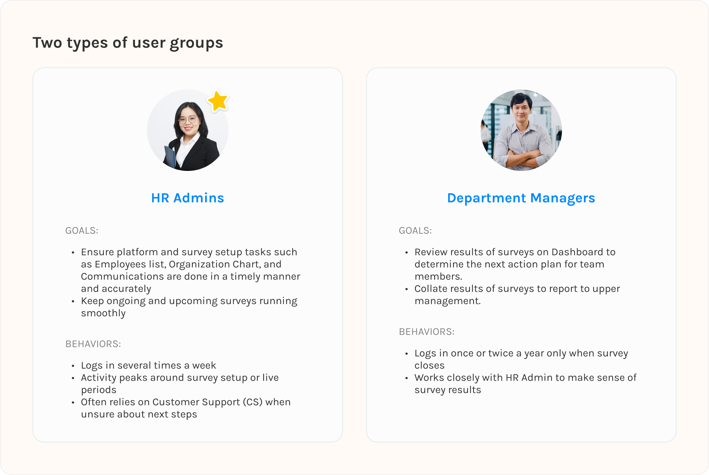
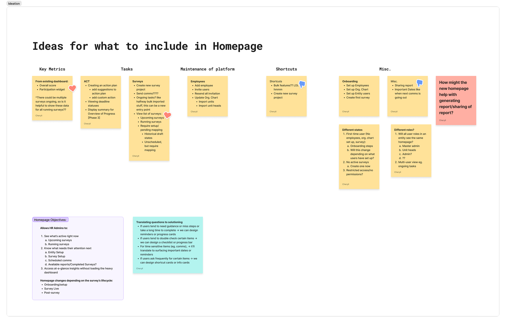
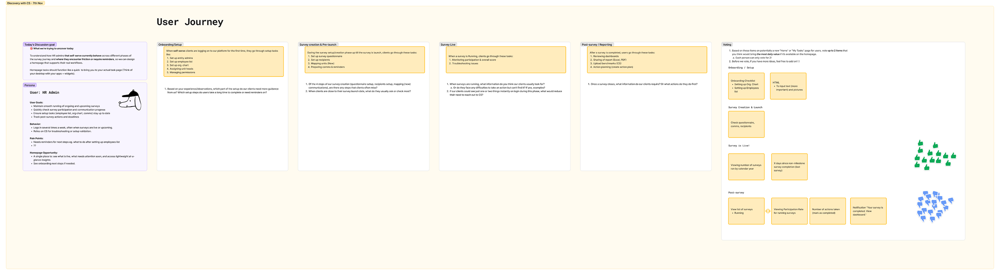
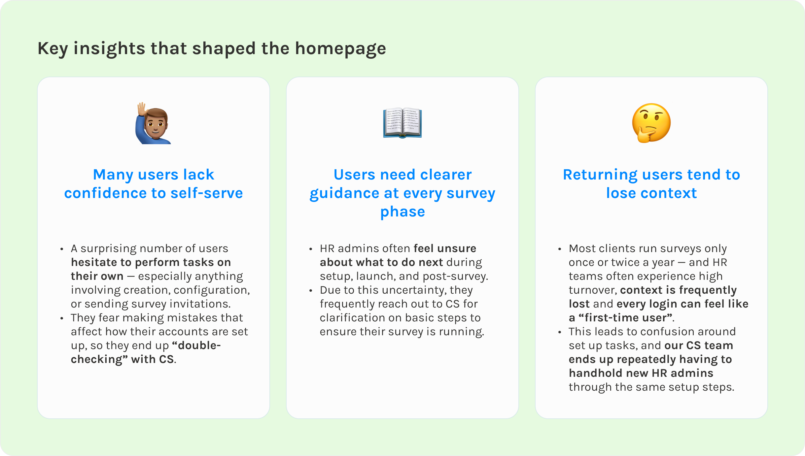
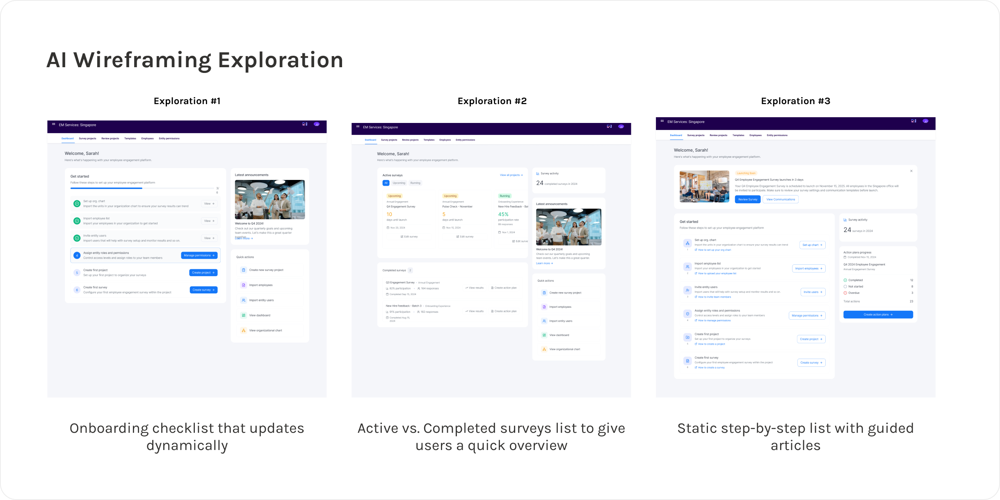
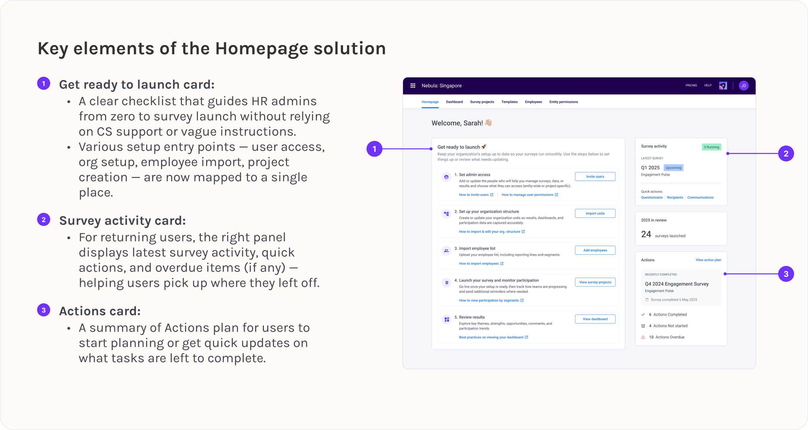

Overview
EngageRocket is a B2B employee experience platform used by HR teams to run company-wide surveys, understand engagement trends, and follow up with actionable insights.
Most users log in during key periods of the survey lifecycle — usually when they’re setting up a survey or monitoring ongoing participation — and need a clear sense of what’s happening and what requires attention.
Role
I was the sole Senior Product Designer and led the end-to-end design process.
Problem
The dashboard was slow, resource-heavy, and not aligned with how HR admins actually work. This resulted in a poor first-touch experience and no clear guidance on what needed attention in a survey lifecycle.
How might we design a lightweight homepage that aligns with HR admins’ real workflows when running engagement surveys?
While there are two main user types, for MVP purposes, I will be focusing on our key users which are B2B HR admins responsible for setting up engagement surveys, monitoring participation, and coordinating follow-up actions.

The initial problem space given to me was wide; simply “redesign the dashboard”, with no clear requirements or direction. I took a step back and explored how a landing experience could meaningfully support HR Admins' real workflows by creating an extensive list of homepage elements.
From there, I set up a discovery plan to interview our Customer Success team (which are the closest proxy users we have) to understand which of these ideas actually mapped to real workflows.

Discovery
I planned and facilitated sessions with our Customer Success (CS) team — the people who work closest with our actual users/clients since we could not interview our users directly. My goal was to understand how users behave across each phase of the survey lifecycle.
I focused on uncovering:

Synthesis
After synthesising early themes, I presented a set of homepage concepts based on user needs and asked CS to vote on which ones would deliver the highest daily value if surfaced on the homepage.
This helped:

Once I understood the real problems HR admins were facing, I jumped into exploration mode. The design brief was broad, users lack confidence on next steps, and the homepage had to work for both a totally new user and someone returning six months later — so I knew I needed breadth before committing to a direction.
I leaned on AI as my creative partner, which is a great help since I’m the sole designer here. I started off with prompting on ChatGPT and once there’s a more concrete direction, I used Figma Make to rapidly generate different homepage layouts and content: checklists, card grids, guided flows.

The goal at this stage was to stretch and uncover patterns I wouldn’t have thought of on my own. From there, I weighed the ideas against our actual insights:
Across dozens of variations, two highlights that really address the problems uncovered are the need for:

The redesigned homepage is expected to:
This project taught me how to move forward even when requirements were vague and product direction kept shifting. Instead of waiting for clarity, I learned to frame the problem myself, gather the insight I needed, and steer the team toward a workable scope.
I entered the project with a more ambitious, industry-inspired vision — but the team needed a lightweight MVP that could ship fast. Navigating this tension helped me become more pragmatic: designing for the actual context, not just the ideal one.
Leveraging AI-based wireframing let me explore layout variations and validate ideas within minutes. It compressed my ideation cycle and freed up time for higher-value decisions — like mapping user flows, aligning with the team, and refining what truly matters.